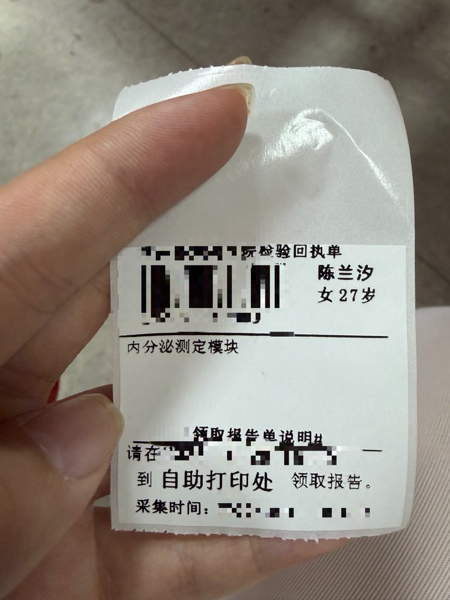

たたなこ🏳️⚧️🍥
@tatanakots
@Moli_Lanxi 羡慕术后挂妇科
ttnk测六项甚至每次医生勾选性激素检测全套的时候都会弹出“孕酮测定为女性专属项目”然后从全部项目里面找到孕酮测定再给我补上（

兰汐
@Moli_Lanxi
今天去做激素六项，医生很负责任的问我月经期第几天，每月持续多少天？我为了防止出现不必要的麻烦就信口胡说了个第七天，每月大概持续28-30天，于是还被医生如实记录到病历里面去了😅 https://t.co/CQSfP3mGjT